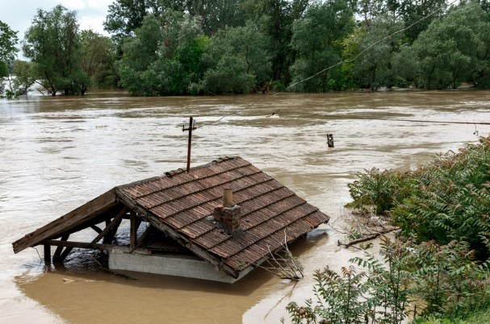

Sel Anında Yapılması Gerekenler
Sel sırasında güvenliğinizi sağlamak ve hayatta kalmak için bu temel adımları izleyin:
1. Hızla Yüksek Bir Yere Çıkın
Hızla yüksek bir yere çıkmak, özellikle sel gibi su baskınları sırasında hayatta kalma şansınızı artırabilir. Sel sularının hızla yükseldiği durumlarda, su seviyesinden kurtulmak için en yakın yüksek alanı hedeflemek önemlidir. Bu alanlar genellikle binaların üst katları, tepeler veya sağlam, yüksek yapılar olabilir. Yüksek bir alana çıkmak, sizi suya maruz kalmaktan koruyarak güvenli bir konumda tutar. Eğer bulunduğunuz yerde yüksek bir alan yoksa, bir ağaç dalı veya herhangi bir sağlam yapıyı tutun. Ancak, özellikle su seviyesinin çok hızlı yükseldiği durumlarda, hemen güvenli bir yere yönelmek için çevrenizi dikkatlice değerlendirin. Yüksek bir yere tırmanırken dikkatli olun ve çevredeki tehlikeleri göz önünde bulundurun.
2. Su İçinde Yürümekten Kaçının
Su içinde yürümekten kaçınmak, özellikle sel gibi doğal afetler sırasında oldukça önemlidir. Su seviyesi yükseldiğinde, nehrin veya derenin gücü tahmin edilemez hale gelir. Bu nedenle su içinde yürümek tehlikeli olabilir. Akıntılar, suyun altındaki gizli tehlikeler ve ani su yükselmeleri, ciddi yaralanmalara yol açabilir. Ayrıca, suyun içinde ilerlerken dengenizi kaybetmeniz, düşmenize veya boğulma riskiyle karşı karşıya kalmanıza neden olabilir. Su seviyesi arttığında, güvenli bir yer aramak ve yürümek yerine beklemek en doğru seçimdir. Eğer su altında kaldıysanız, hemen en yakın yüksek alana çıkarak yardım çağırmalısınız.
3. Elektrik Hatlarına Dikkat Edin
Elektrik hatlarına dikkat etmek, özellikle fırtına, sel veya herhangi bir doğal afet sonrası büyük önem taşır. Elektrik hatları hasar görebilir ve canlı tellerin yerle temas etmesi tehlikeli olabilir. Elektrik hatlarının altına veya yakınlarına yaklaşmak, yüksek voltaj riski nedeniyle ölümcül sonuçlar doğurabilir. Yerdeki elektrik kablolarına basmak veya dokunmak, elektrik çarpmasına yol açabilir. Bu nedenle, elektrik hatlarına düşen bir ağaç veya hasar görmüş bir tel gördüğünüzde, hemen o bölgeden uzaklaşın ve yetkililere haber verin. Ayrıca, elektrik kesintileri sırasında, elektrikli cihazları kullanmamaya özen gösterin ve güvenliğiniz için elektrikli sistemlerdeki herhangi bir arızayı bildiriniz.
4. Araç Kullanmayın
Sel suları hızla yükseldiğinde, araçlar kolayca sürüklenebilir. Eğer araçta mahsur kalırsanız, su seviyesi artıyorsa derhal aracı terk edin. Kapılar açılmıyorsa camları kırarak çıkın. Aracı terk ettikten sonra, güvenli bir yüksek alana yönelin. Araç kullanmak bu durumda çok tehlikeli olabilir, bu yüzden su seviyesinin daha da artmasını beklemeden hızlıca güvenli bir yere ulaşın..
5. Yetkililerin Uyarılarını Dinleyin
Yerel haber kaynaklarını takip ederek tahliye emirlerine uyun. Güvenli bir bölgeye yönlendirilmeniz halinde hızlı hareket edin.
6. Sel Çantasını Hazırlayın
Önceden hazırlanmış bir acil durum çantası hayat kurtarıcıdır. Çantanızda su, dayanıklı yiyecekler, ilaçlar, el feneri, pil ve kimlik belgeleriniz bulunmalıdır.
7. Güvenli Alanlar Belirleyin
Sel sırasında güvenli alanlar belirlemek, hayatta kalma şansını artırır. Yüksek yerlerde bulunmak, su seviyesinin artmasını engeller. Sel bölgesinden uzaklaşarak daha güvenli alanlara yönelin. Yüksek tepeler, köprüler ve suyun ulaşamadığı bölgeler ideal güvenli alanlar olabilir. Ev veya binaların üst katlarına çıkmak da güvenli bir seçenek sunar. Unutmayın, sel suları hızla yükselebilir, bu yüzden önceden plan yaparak güvenli alanlara gitmek önemlidir.